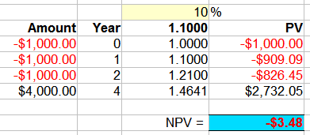

Internal Rate of Return (IRR)
The Internal Rate of Return is a good way of judging an investment. The bigger the better!
The Internal Rate of Return is the interest rate
that
makes the Net Present Value zero
OK, that needs some explaining, right?
It is an Interest Rate.
We find it by first guessing what it might be (say 10%), then work out the Net Present Value.
The Net Present Value is how much the investment is worth in today's money
(we find how to calculate it later)
Then keep guessing (maybe 8%? 9%?) and calculating, until we get a Net Present Value of zero.
Example: Sam is going to start a small bakery!
Sam estimates all the costs and earnings for the next 2 years, and calculates the Net Present Value:
But the Net Present Value should be zero, so Sam tries 8% interest:
Now it's negative! So Sam tries once more, but with 7% interest:
Close enough to zero, Sam doesn't want to calculate any more.
The Internal Rate of Return (IRR) is about 7%
So the key to the whole thing is ... calculating the Net Present Value!

Read Net Present Value ... or this quick summary:

An investment has money going out (invested or spent), and money coming in (profits, dividends etc). We hope more comes in than goes out, and we make a profit!
To get the Net Present Value:
Add what comes in and subtract what goes out,
but future values must be brought back to today's values.
Because money now is more valuable than money later on.
Example: Let us say you can get 10% interest on your money.
So $1,000 now earns $1,000 x 10% = $100 in a year.
Your $1,000 now becomes $1,100 in a year's time.
(In other words: $1,100 next year is only worth $1,000 now.)
So just work out the Present Value of every amount, then add and subtract them to get the Net Present Value.
Present Value

So $1,000 now is the same as $1,100 next year (at 10% interest).
The Present Value of $1,100 next year is $1,000
Present Value has a detailed explanation, but let's skip straight to the formula:
PV = FV / (1+r)n
- PV is Present Value
- FV is Future Value
- r is the interest rate (as a decimal, so 0.10, not 10%)
- n is the number of years
And let's use the formula:
Example: Alex promises you $900 in 3 years, what is the Present Value (using a 10% interest rate)?
- The Future Value (FV) is $900,
- The interest rate (r) is 10%, which is 0.10 as a decimal, and
- The number of years (n) is 3.
So the Present Value of $900 in 3 years is:
Notice that $676.18 is a lot less than $900.
It is saying that $676.18 now is as valuable as $900 in 3 years (at 10%).
Example: try that again, but use an interest rate of 6%
The interest rate (r) is now 6%, which is 0.06 as a decimal:
When we only get 6% interest, then $755.66 now is as valuable as $900 in 3 years.
Net Present Value (NPV)
Now we are equipped to calculate the Net Present Value.
For each amount (either coming in, or going out) work out its Present Value, then:
- Add the Present Values you receive
- Subtract the Present Values you pay
Like this:
Example: You invest $500 now, and get back $570 next year. Use an Interest Rate of 10% to work out the NPV.
Money Out: $500 now
Money In: $570 next year
And the Net Amount is:
So, at 10% interest, that investment has NPV = $18.18
But your choice of interest rate can change things!
Example: Same investment, but work out the NPV using an Interest Rate of 15%
Money Out: $500 now
Money In: $570 next year:
Work out the Net Amount:
So, at 15% interest, that investment has NPV = -$4.35
It has gone negative!
Now it gets interesting ... what Interest Rate can make the NPV exactly zero? Let's try 14%:
Example: Try again, but the interest Rate is 14%
Money Out: $500 now
Money In: $570 next year:
Work out the Net Amount:
Exactly zero!
At 14% interest NPV = $0
And we have discovered the Internal Rate of Return ... it is 14% for that investment.
Because 14% made the NPV zero.
Internal Rate of Return
So the Internal Rate of Return is the interest rate that makes the Net Present Value zero.
And that "guess and check" method is the common way to find it (though in that simple case it could have been worked out directly).
Let's try a bigger example:
Example: Invest $2,000 now, receive 3 yearly payments of $100 each, plus $2,500 in the 3rd year.
Let us try 10% interest:
- Now: PV = -$2,000
- Year 1: PV = $100 / 1.10 = $90.91
- Year 2: PV = $100 / 1.102 = $82.64
- Year 3: PV = $100 / 1.103 = $75.13
- Year 3 (final payment): PV = $2,500 / 1.103 = $1,878.29
Adding those up gets:
NPV = -$2,000 + $90.91 + $82.64 + $75.13 + $1,878.29 = $126.97
Let's try a better guess, say 12% interest rate:
Example: (continued) at 12% interest rate
- Now: PV = -$2,000
- Year 1: PV = $100 / 1.12 = $89.29
- Year 2: PV = $100 / 1.122 = $79.72
- Year 3: PV = $100 / 1.123 = $71.18
- Year 3 (final payment): PV = $2,500 / 1.123 = $1,779.45
Adding those up gets:
NPV = -$2,000 + $89.29 + $79.72 + $71.18 + $1,779.45 = $19.64
Ooh .. so close. Maybe 12.4% ?
Example: (continued) at 12.4% interest rate
- Now: PV = -$2,000
- Year 1: PV = $100 / 1.124 = $88.97
- Year 2: PV = $100 / 1.1242 = $79.15
- Year 3: PV = $100 / 1.1243 = $70.42
- Year 3 (final payment): PV = $2,500 / 1.1243 = $1,760.52
Adding those up gets:
NPV = -$2,000 + $88.97 + $79.15 + $70.42 + $1,760.52 = -$0.94
That is good enough! Let us stop there and say the Internal Rate of Return is 12.4%
In a way it is saying "this investment could earn 12.4%" (assuming it all goes according to plan!).
Using the Internal Rate of Return (IRR)
The IRR is a good way of judging different investments.
First of all, the IRR should be higher than the cost of funds. If it costs you 8% to borrow money, then an IRR of only 6% is not good enough!
It is also useful when investments are quite different.
- Maybe the amounts involved are quite different.
- Or maybe one has high costs at the start, and another has many small costs over time.
- etc...
Example: instead of investing $2,000 like above, you could also invest 3 yearly sums of $1,000 to gain $4,000 in the 4th year ... should you do that instead?
I did this one in a spreadsheet, and found that 10% was pretty close:

At 10% interest rate NPV = -$3.48
So the Internal Rate of Return is about 10%
And so the other investment (where the IRR was 12.4%) is better.
Doing your calculations in a spreadsheet is great as you can easily change the interest rate until the NPV is zero.
You also get to see the influence of all the values, and how sensitive the results are to changes (which is called "sensitivity analysis").